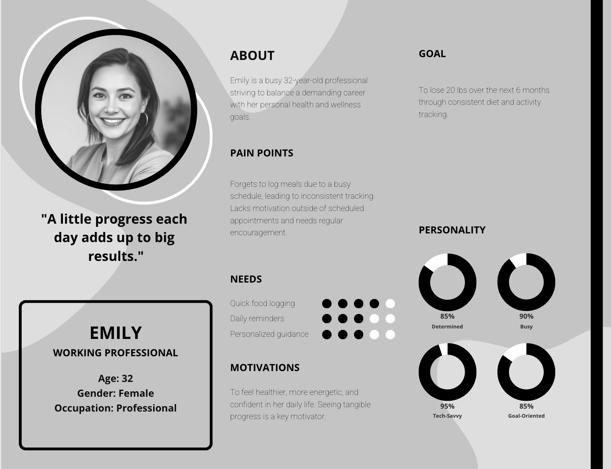
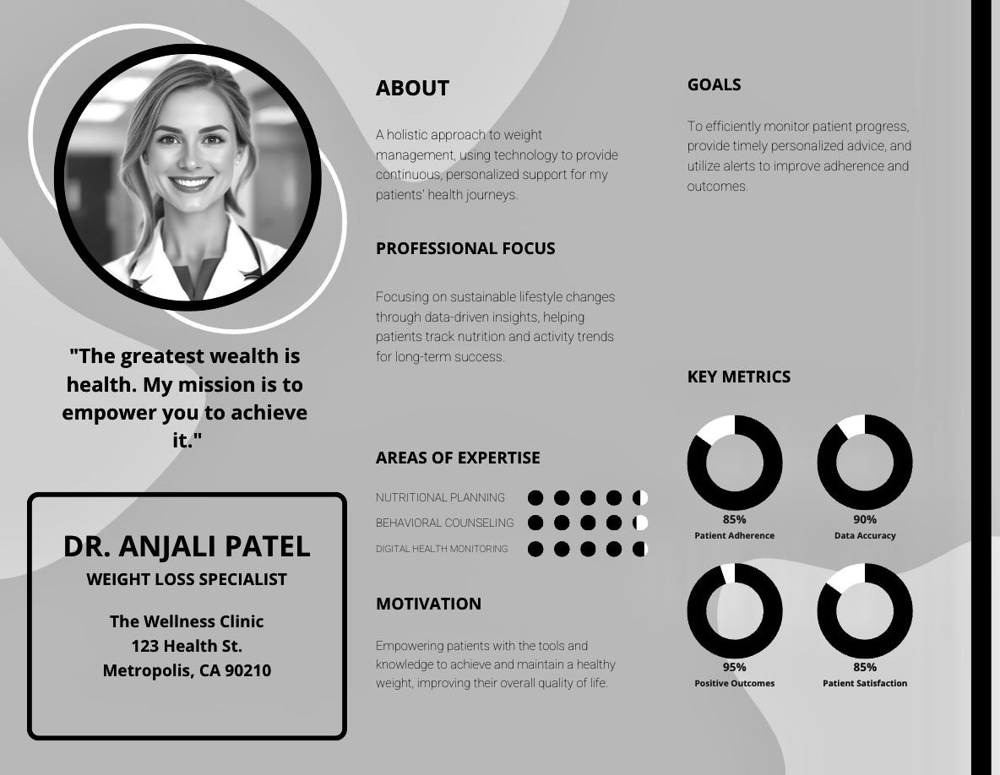

Adhera
A clinic-partnered platform helping weight loss patients stay on track with AI-led nutrition tracking and personalized health guidance.
Setting the Scene
In March 2025, we began developing Adhera, a clinic-partnered solution for weight loss patients. The idea was inspired by my father, who works at a weight loss clinic, where he observed that many patients struggle to track habits like food intake and medications outside the clinic. Existing apps such as MyFitnessPal often lack the doctor-patient connection needed to support patients in achieving personalized health goals.
The Challenge
Weight loss patients struggle to track calories and stay engaged, while doctors lack real-time analytics to monitor progress, limiting clinic effectiveness. This also causes patient treatment time to be much longer, resulting in failed treatment plans.
Target Users
Primary Users: Weight loss patients seeking structured support outside of clinic visits.
Secondary Users: Weight loss doctors who want actionable insights on patient progress.
User Needs
- Easy meal logging and nutrition tracking
- Motivation and reminders for adherence
- Analytics on progress
- Secure and shareable reports for doctor reviews
User Personas
Emily, 45, Working Professional
Dr. Patel, Weight Loss Clinic Doctor
Solution Overview
We built Adhera, a mobile-first platform integrating smart appointment scheduling, AI-based calorie estimation, and patient engagement tools.
Core Value Proposition
For Patients: Simplified meal logging, personalized reminders, AI-based insights to stay motivated and accountable.
For Clinics: Patient progress tracking, actionable reports, and a channel for improved patient engagement.
Competitive Analysis


Differentiation: Clinic-oriented features, AI meal logging, mobile-first focus, lightweight V1 scaling to clinic integration in V2.
Product Features
V1 – MVP
- Photo-based food logging with AI calorie/macro estimation
- Manual entry/correction for accuracy
- Patient dashboard: Nutrition trends and insights
- Shareable reports for doctor visits
- Basic reminders for meal and health goal logging
- Simple goal setting: Calorie targets, macro ratios
V2 – Add-ons
- Doctor dashboard access for tracking multiple patients
- Appointment scheduling integration
- Real-time doctor-patient communication
- Wearable integration for activity tracking
Why V1 first: Focus on high-value, low-complexity features to validate patient adoption and engagement before scaling to clinics.
Metrics & KPIs
- Patient Engagement: Daily active users logging meals, reminder adherence rate, weekly active users
- Health Outcomes: % of patients meeting calorie/macronutrient goals, weight progress over time
- Clinic Value: % of patients sharing reports, doctor adoption and feedback, patient retention rates
Go-to-Market Strategy
Target early adopters: Nearby weight loss clinics and health-tech investors.
Pitch angle:
- For clinics: “Improve patient adherence and outcomes without extra staff workload.”
- For investors: “AI-powered patient engagement platform with scalable clinic integration; early focus on mobile-first patient adoption.”
Pilot plan: Partner with 2–3 local clinics for 3 months, collect patient engagement and health outcome data, iterate features based on usage patterns.
Roadmap (High-Level)
| Phase | Timeline | Features |
|---|---|---|
| MVP (V1) | 0–3 months | AI food logging, manual corrections, dashboard, shareable reports, basic reminders |
| Early Adoption | 3–6 months | Pilot with clinics, collect feedback |
| V2 | 6–12 months | Doctor dashboard, appointment sync, messaging, wearable integration |
Business Model
- B2B: Subscription for clinics (per patient or per clinic license)
- B2C: Optional freemium model for patients (basic logging free, advanced insights paid)
Design & UX Approach
Mobile-first design for patients, clean dashboards for quick insights, and simple AI-powered photo logging to reduce friction.